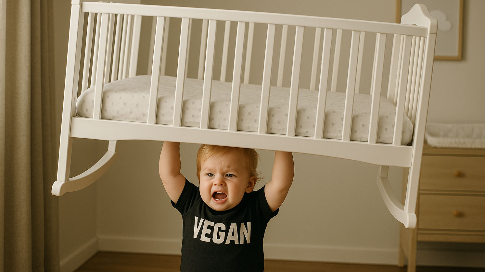

How to Choose the Best Vegan Protein Powder
Buying a vegan protein tub shouldn’t feel like gambling on mystery dust. Start with the hard numbers. Research led by the International Society of Sports Nutrition pegs the daily sweet spot for active adults at 1.4–2.0 g protein per kg body weight, with servings that deliver about 2.5 g leucine to flip muscle-building switches. *
Scoop protein density first. Powders offering at least 20 g protein per serving mean you hit targets without chugging half the tub in one day. Single-source peas do the job; a 12-week trial showed pea isolate grew biceps thickness as well as whey when dosed at 25 g and paired with resistance training. *
Blend quality comes next. Pea lacks methionine, brown rice is short on lysine, so brands that marry both balance the amino ledger automatically. Flip the label for a ratio that lists pea first if strength gain is the goal, rice first if light texture and easier digestion matter more.
Safety is non-negotiable. A 2024 Clean Label Project report found nearly half of plant powders carried heavy metals above guideline thresholds, with lead and cadmium worst in chocolate flavors. * Look for NSF Certified for Sport, Informed-Choice, or USP seals—each signals third-party testing.
Digestive extras tip the comfort scale. Low-FODMAP pea isolates limit fermentable carbs, while bromelain, papain, and probiotic blends tame bloating for sensitive guts. Check for the Low FODMAP logo as a shortcut. *
Taste and sweeteners round out the decision. Stevia and monk fruit sweeten without caloric landmines; gums like xanthan add milkshake body. If you hate aftertastes, pick products flavored with organic vanilla or cocoa and skip sucralose entirely.
Price still matters when you drink a scoop daily. Calculate cost per serving rather than sticker price; anything under $2 is good value, sub-$1 is budget territory.
Top Picks
- Vega Sport Premium Protein: 30 g protein, 5 g BCAA, NSF-certified.
- Orgain Organic Plant-Based Protein Powder: 21 g protein, smooth, ~$1/serving.
- Purely Inspired Organic Protein: 20 g protein, 2 g sugar, budget-friendly.
- Naked Pea Protein: 27 g protein, single-ingredient, heavy-metal tested.